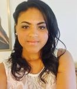
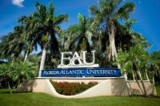

|

|
|
About me:
My name is Nelly Delgado Planche. I was born in Havana, Cuba. Currently, I reside in Boca Raton, Florida. I'm passionate about reading psychology books and volunteering. I started volunteering in high school, and since then, I have participated in many programs, most notably the
Miami zoo's Teen Camp and Frost science MUVE program
This web page will serve as my online resume. I'm studying Computer Science at Florida Atlantic University, I know object-oriented programming (OOP), and I work well independently and in a team.Currently, I'm a member of WIE/CS( Women In Engineering and Computer Science organization). My goal is to merge career and passion and create a web page that helps students find volunteering opportunities.
|

|